Самый долгожданый концерт для всех жителей мурино это тот концерт где есть оркестр Бэм.Их звучание просто прекрасно,на сцену выходит дирижёр фог,а за ним стоят певцы ч и друны.Их звучание будет получше вашего бтс и другого кей-попа.
Объект №13 "Учитель фог"
Обитание:Муринская школа
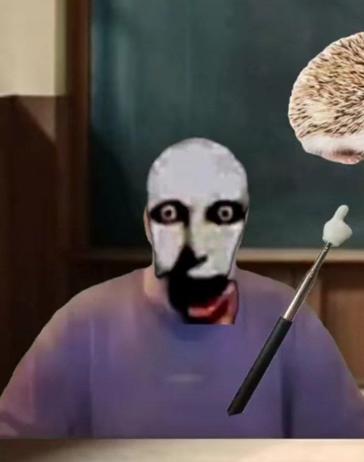
Учит детей кругозору,но если они не будут хотеть получать знания,он их съест.
Объект №14 "Муринский серафим"
Обитание:3395е666 этаж
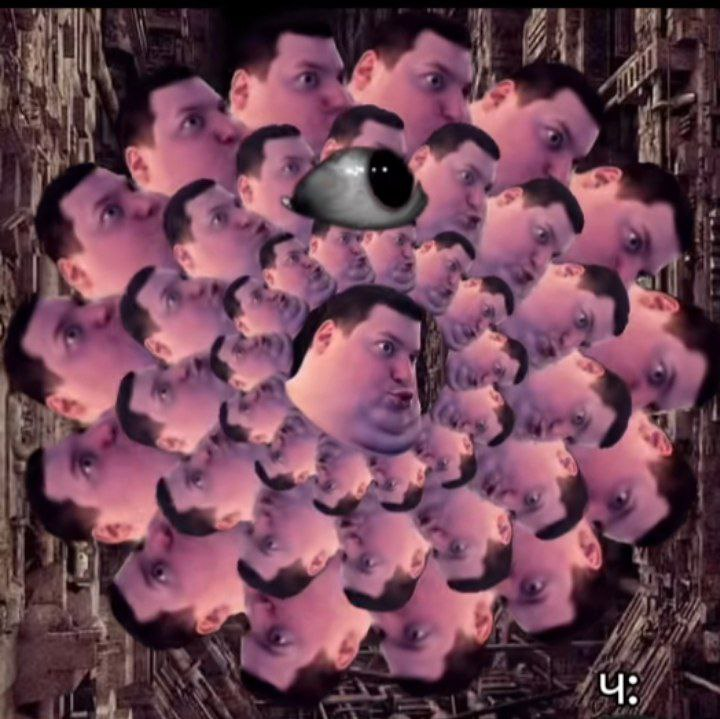
Он наблюдает за вами,он наблюдает за всеми.Те кто видел его и вернулся на более низкие этажи сошли с ума, он постояно появляется в их снах и шепсет им что то на ухо.
Объект №15 "Собака Ч (Колбаска)"
Обитание:Раньше всё Мурино,сейчас мертва
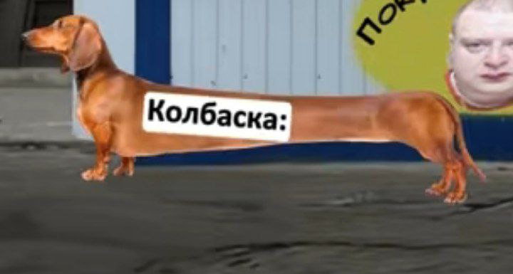
Появлялась только в одной серии на которой видно как фог сделал из неё муринскую шаверму.
Объект №16 "Шаурмечная Шаверма по-Мурински"
Обитание: Улица
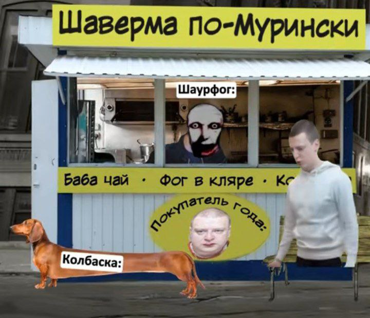
Именно здесь и сделали из собаки Ч шаурму,помимо шаурмы из собак здесь можно купить баба чай и фог в кляре,всем друнам нравится так сильно,что они умирают от пищевого отравления.
Объект №17 "Урок музыки"
Обитание:Всё Мурино
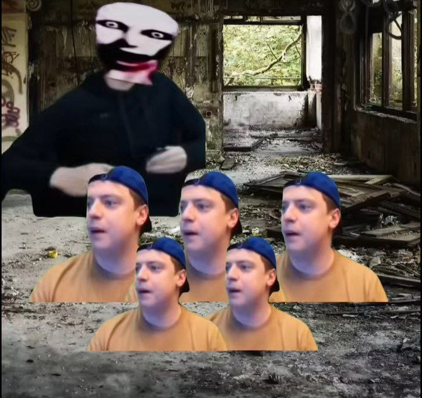
Если фог вас заставляет побитбоксить,то вы обязаны набитбоксить идентично как в оригинале,тогда он вас отпустит,если вы отказываетесь или поёте с ошибками то фог вас убьёт.В один момент фог начинает говорить быстрее,что усложняет задачу битбоксить идеально,если вы не ускоретесь он вас убьёт.
Объект №18 "Друн не умеющий петь"
Обитание:Всё Мурино
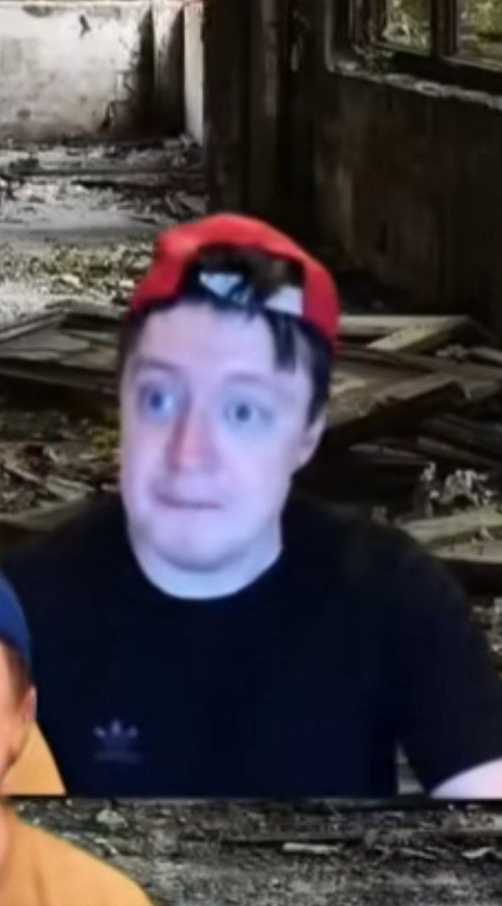
Такие обычно живут до первого урока музыки,ведь после ускорения фога моментально перестают битбоксить или начинают ошибаться,как итог их разрывает фог.
Объект №19 "Зелёный фог"
Обитание:1583 этаж
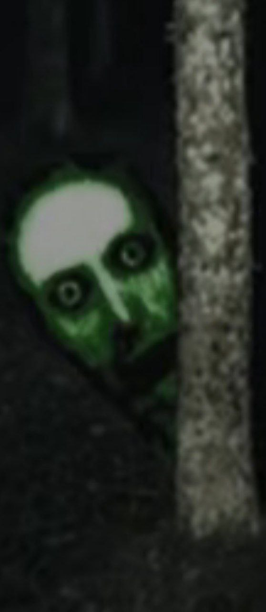
Неизвестно ничего,встречался в одной серии,после чего больше не появлялся,в той серии вёл себя пасивно.
Объект №20 "Неопознаный монстр"
Обитание:1583 этаж
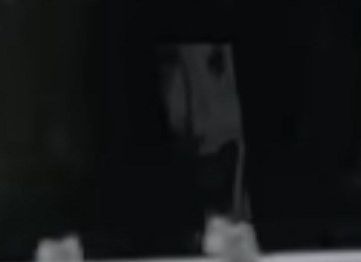
Появился в той же серии,что и зелёный фог.Также неизвестно ничего,да ещё и фото в отвратительном качестве.
Объект №21 "Зелёный трамвай"
Обитание:1583 этаж
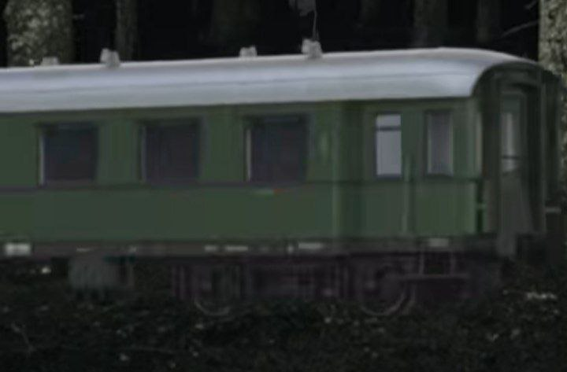
Появлялся в той же серии,что зелёный фог и неопознаный монстр,попытался переехать ч.Видимо у трамвая есть свой разум.Кто знает сколько ещё секретов хранит 1583 этаж.
Объект №22 "Друн без ног"
Обитание:1582 этаж (в теории всё Мурино)
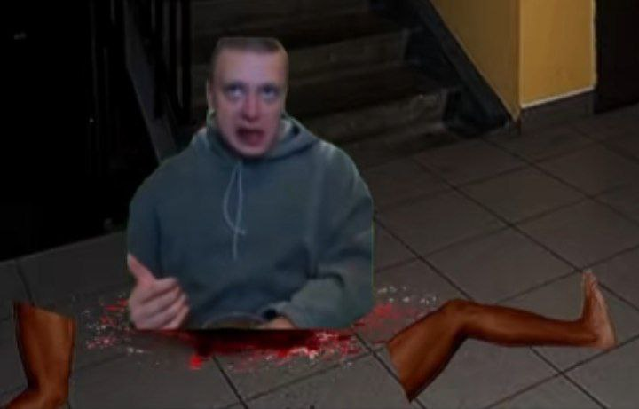
Друн которому оторвало ноги,он уже истёк кровью и лежит полумёртвый.Появлялся в той же серии где были трамвай,неопознаный монстр и зелёный фог.В теории таких друнов могут быть тысячи по всему Мурино.
Объект №23 "Fog is dancing"
Обитание:-19 этаж
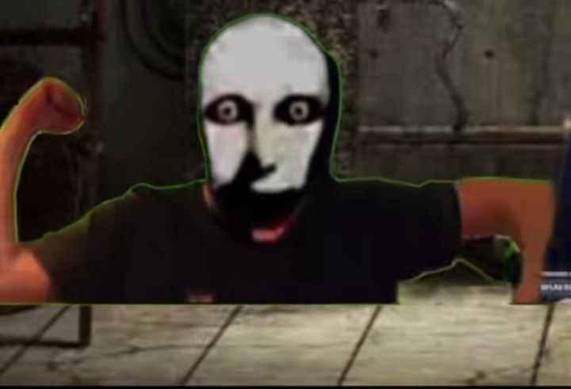
Когда ч упал с 462 этажа и упал на -19 он заметил странного фога который танцевал и говорил: Танцуем все,уда уда.Фог так и не тронул ч,а продолжил танцевать.С того момента его обнаруживали ещё несколько раз всё на том же -19 этаже.
Объект №24 "Пакостный заяц"
Обитание:Всё Мурино
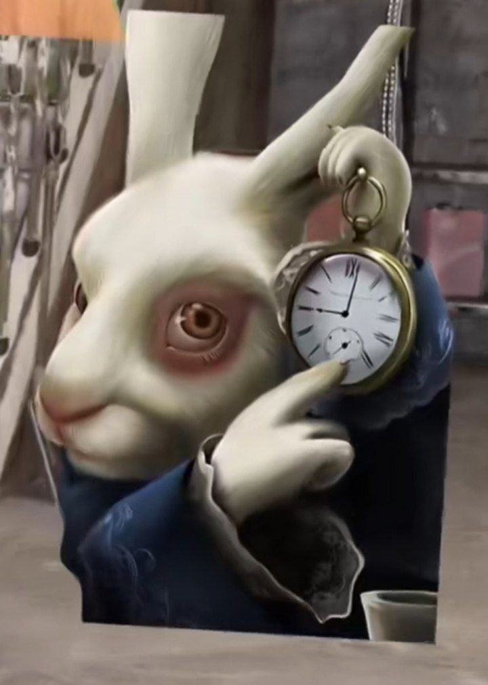
Пакостный заяц - нейтральная сущность,она может быть агрессивной как к фогам,так и к ч с друнами.Хоть пакость и слабее большинства фогов,но он специально ищет фогов слабее него,чтоб растерзать их.Также может заставить битбоксить ч с друном.Он способен останавливать время на короткий промежуток.Также способен призывать двух пакостных птиц чтоб закончить эру вкусности и начать эру пакости.
Объект №25 "Император Мурино"
Обитание:Верхние этажи Мурино
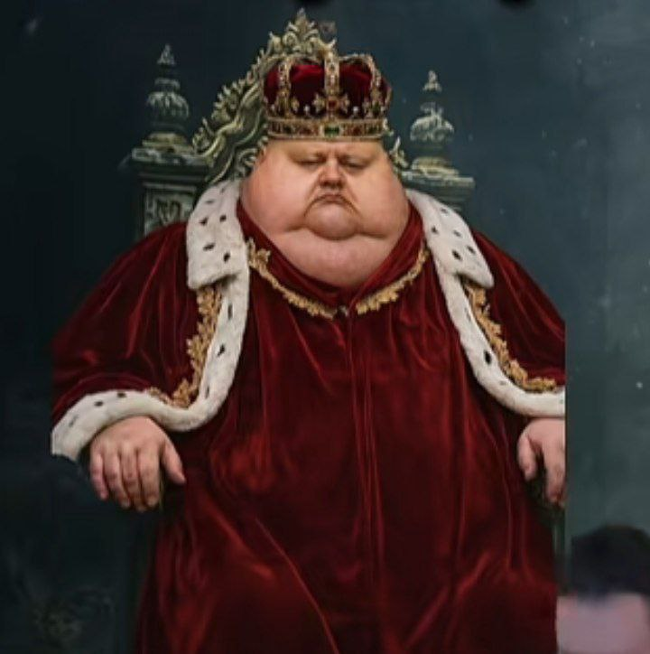
Подставной император Мурино для тех друнов которые не хотят признавать власть фогов.Когда то был обычным друном,но потом его начали кормить и он вырос до таких размеров,что некоторые друны начали считать его своим императором и кормить всё больше.
Объект №26 "Кормление Императора"
Обитание:Верхние этажи Мурино
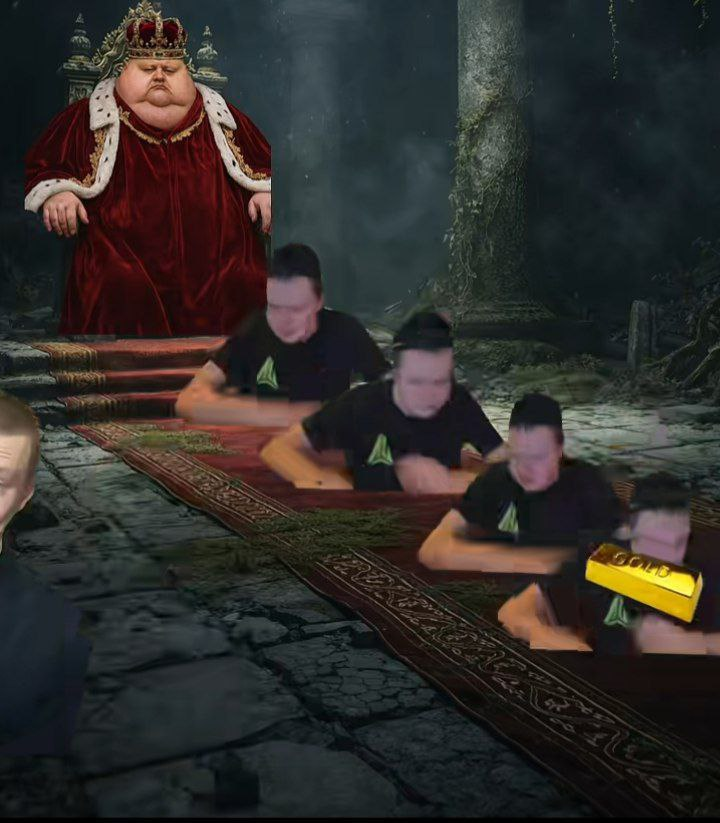
Друны выстраиваются в очередь и передают императору вкусность.Чтоб он не начал терять свой вес им нужно кормить его беспрерывно.Иначе он потеряет вес и многие перестанут считать его императором Мурино.
Объект №27 "Сердце Мурино"
Обитание:Подвал Мурино
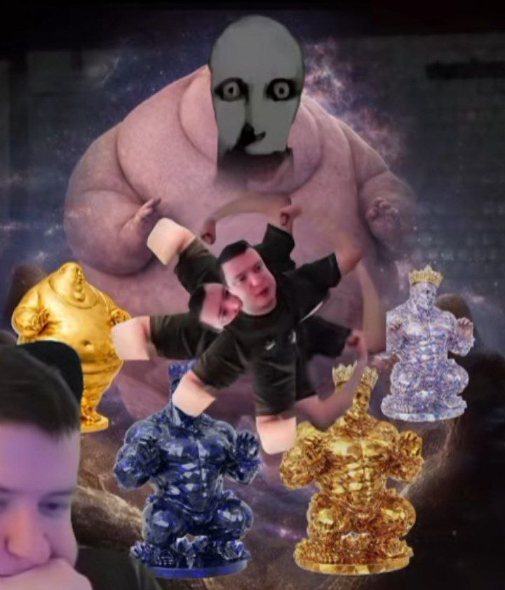
Этот объект был недавно обнаружен ч,пока не доказано что именно он является сердцем Мурино,но его тело и статуи богов рядом с ним нам намекают на это.Скорее всего его невозможно убить.Также неизвестно как он относится к Ч и друнам,но в тот раз он не съел Ч.
Объект №28 "Вкусность"
Обитание:Огород Мурино
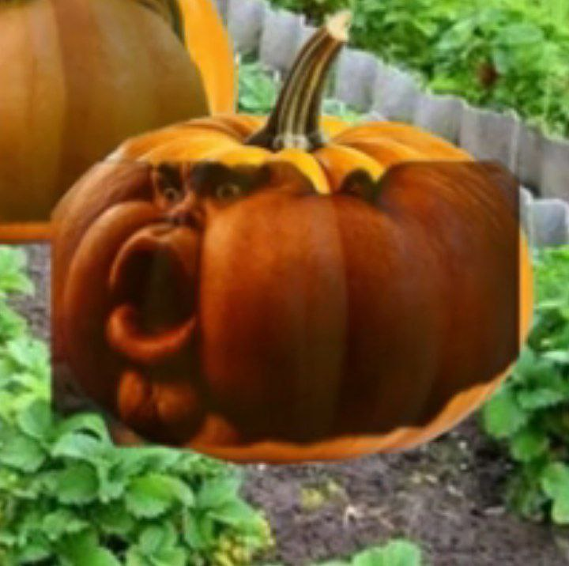
Вкусность - Муринская тыква которая очень нравится пакостным птицам,они постояно хотят её съесть.Друны охраняют вкусность чтоб её не съели,хоть таких тыкв и много,но они не размножаются.Из-за этого чем меньше вкусностей тем ближе эра пакости.Когда съедят все тыквы начнётся эра пакости.
Объект №29 "Неизвестная аномалия"
Обитание:Нижние этажи Мурино
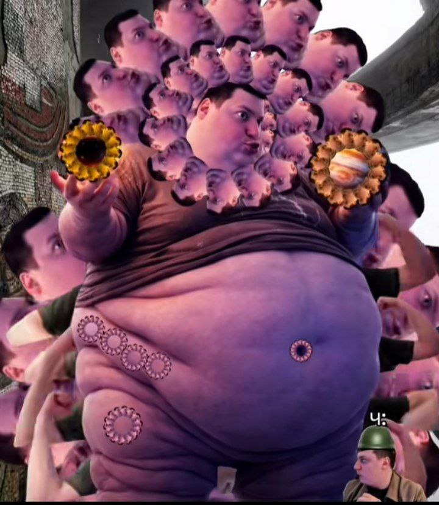
Неизвестная аномалия с которой столкнулся ч при обыскивании нижних этажей.Предположительно опасная,но ч отказывается коментировать встречу с этой аномалией,так что нам неизвестно её поведение к друнам.
Объект №30 "Фогомакс"
Обитание:Всё Мурино
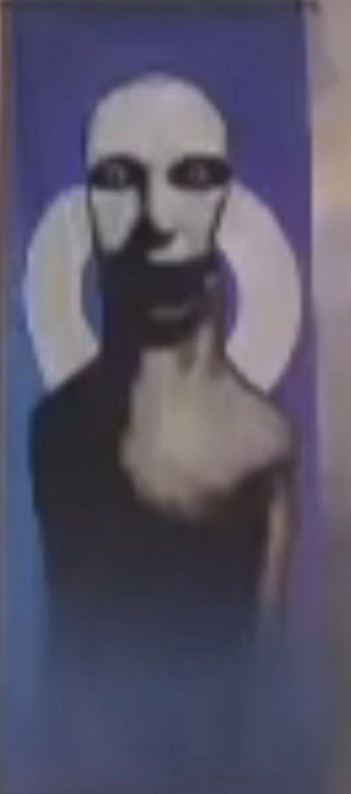
Фогомакс - неизвестный фог который появлялся всего в нескольких местах.Это голлограма на здании в котором нам приказывают скачать макс,последствия тех кто не скачает макс неизвестны.Предположительно за ними приходят fog'и.
Объект №31 "Ёж красный"
Обитание:Муринский лес
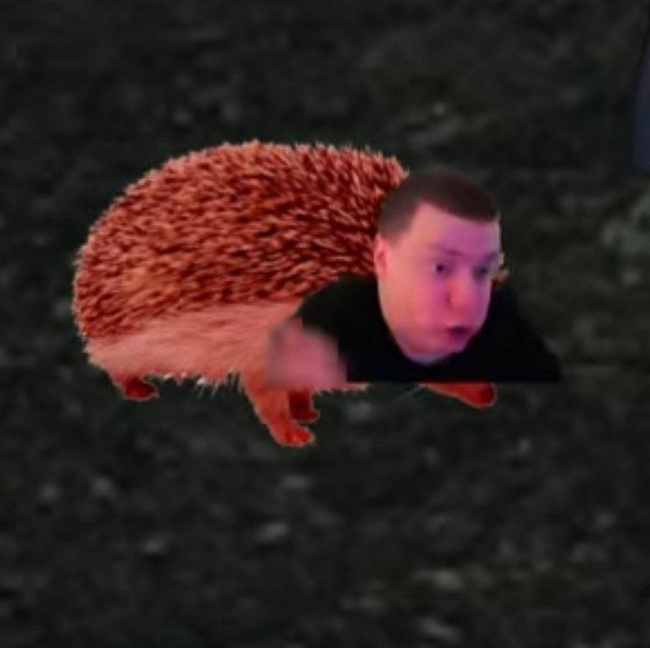
Ёж красный это муринский вид ежей которые негативно настроены по отношению к ч и друнам.Если его покормить он начнёт стремительно расти.
Объект №32 "Магазин светофор"
Обитание:Всё Мурино
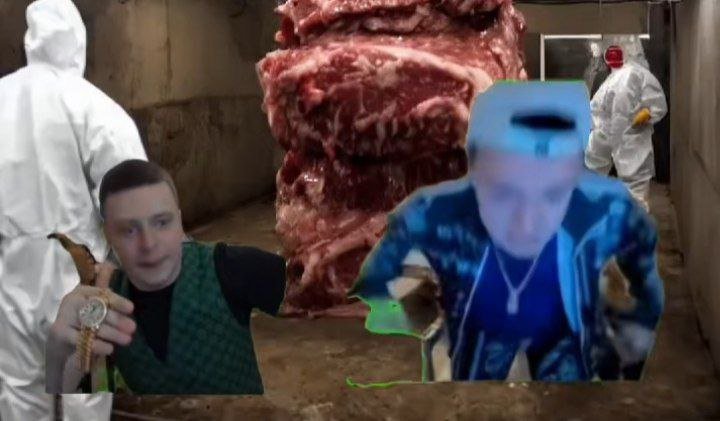
Магазин светофор это магазин где продаются самые вкусные продукты,они настолько вкусные,что друны умирают от отравления.Также не в коем случае не заходите в мясной отдел,если не хотите чтоб из вас сделали мясо и продали фогам.
Объект №33 "Дурн"
Обитание:Всё Мурино
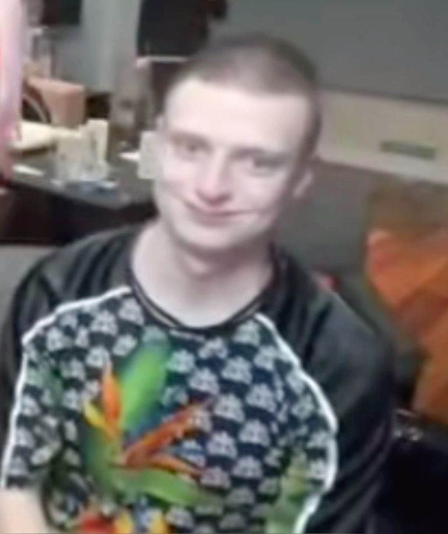
Дурн - тупой друн ударившейся головой или покалеченный фогами.Ему повредили голову,что сказалось на его разуме и интеллекте.Он дружелюбен к друнам и Ч.
Объект №34 "Чиливик"
Обитание:35838 этаж
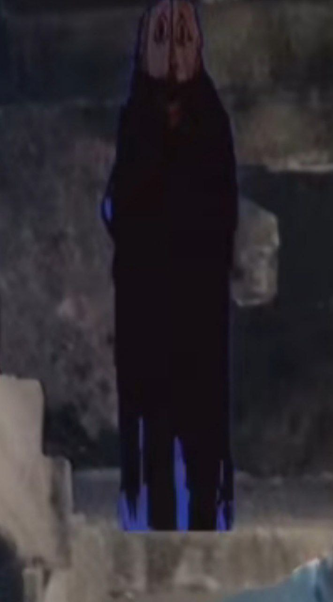
Раньше никто его никогда не видел,но в последние полгода участились случаи встречи чиливика на 35838 этаже,не понятно почему он появляется именно там,но в других областях его не видели.
Объект №35 "Жури фоги"
Обитание:Сцена Мурино
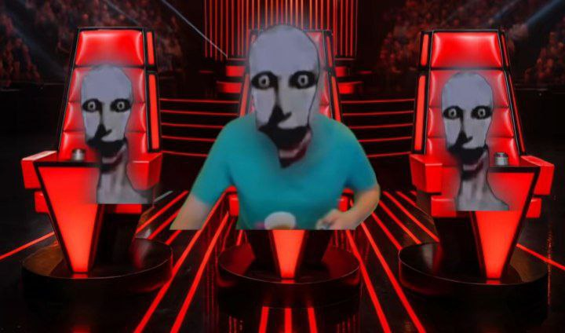
Жури фоги это фоги оценивающие выступления друнов и Ч.Если им не понравится ваше выступление то вас разорвут на части и съедят.
Объект №36 "Шоу Голос"
Обитание:Сцена Мурино
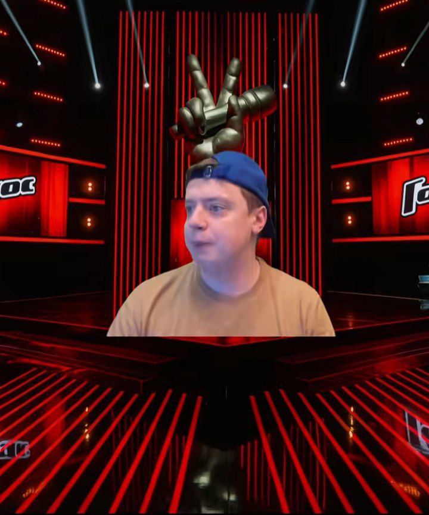
Шоу голос проходит раз в полгода,на нём союираются друны и их оценивают фоги,если фогам не нравится номер друнов,они разрывают и съедают их.На шоу выступает от 30 до 45 друнов.
Объект №37 "Военные фоги"
Обитание:Муринская армия
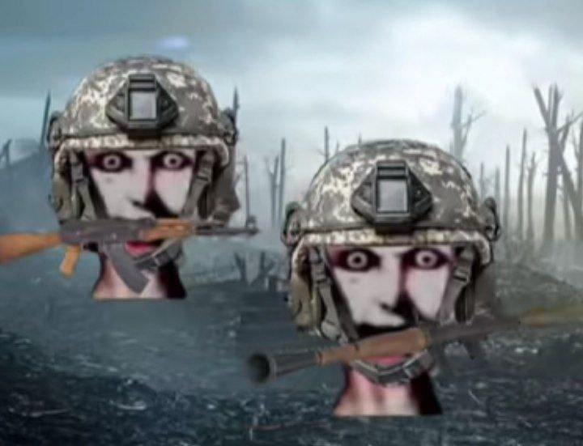
Военные фоги живут в армии и проходят там военную подготовку,учаться стрелять и уничтожать друнов,туда могут попасть только fog'и.Обычным фогам вход туда категорически запрещён.
Объект №38 "Генерал фог"
Обитание:Муринская армия
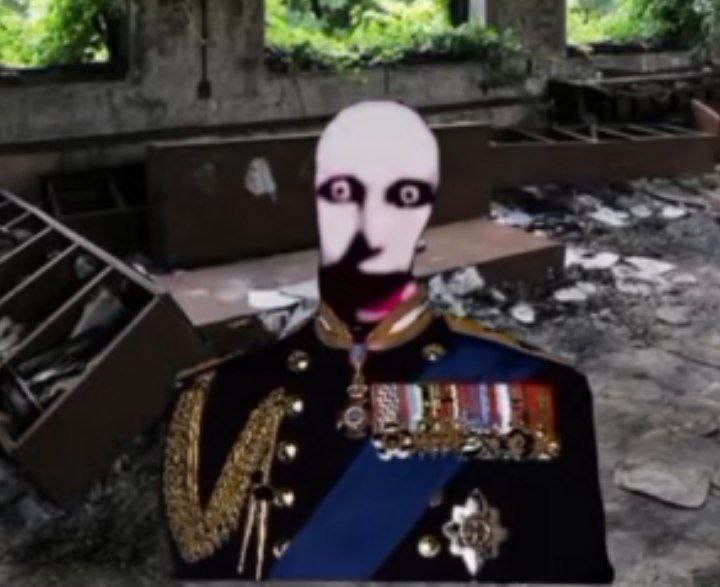
Генерал фог руководит военными фогами при случае войны,а так сидит у себя в кабинете и смотрит серии про Мурино с друном и ч.
Объект №39 "ZЧ"
Обитание:Всё мурино
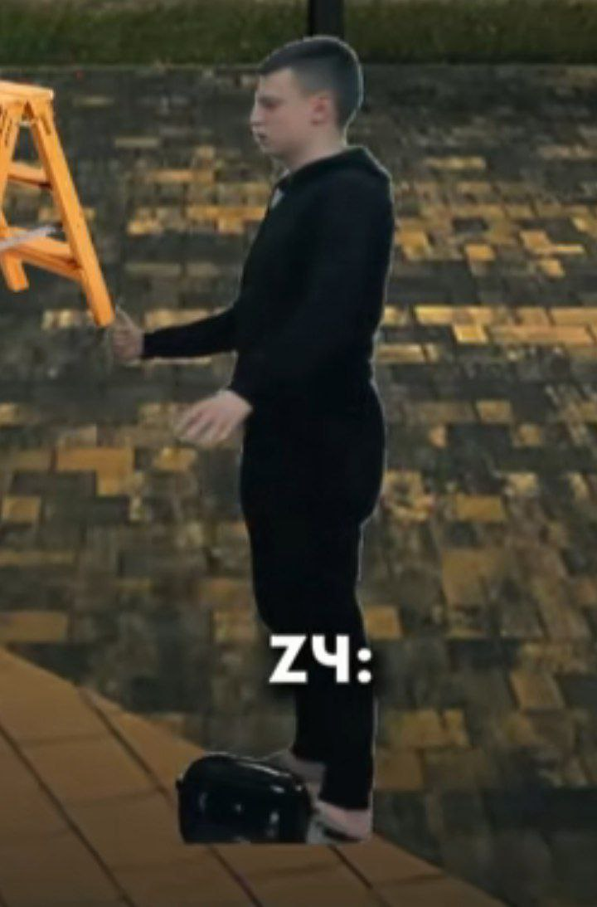
Брат ч,обычно смотрит как фог отправляет друнов на качеле в космос.
Объект №40 "Fog Wayder"
Обитание:Космос,Всё Мурино
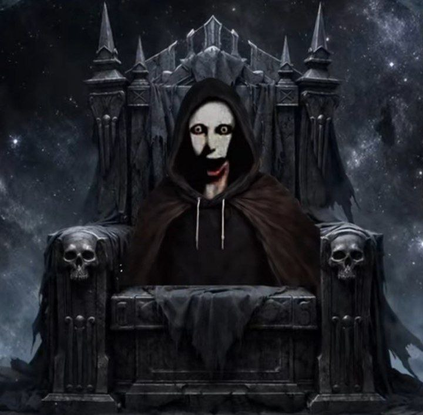
Бог фогов,живёт в космосе.Иногда навещает Мурино.Его сила неограничена,он может свергнуть любого.
Объект №41 "Неизвестный монстр"
Обитание:Рядом с бункером(Подвал Мурино)
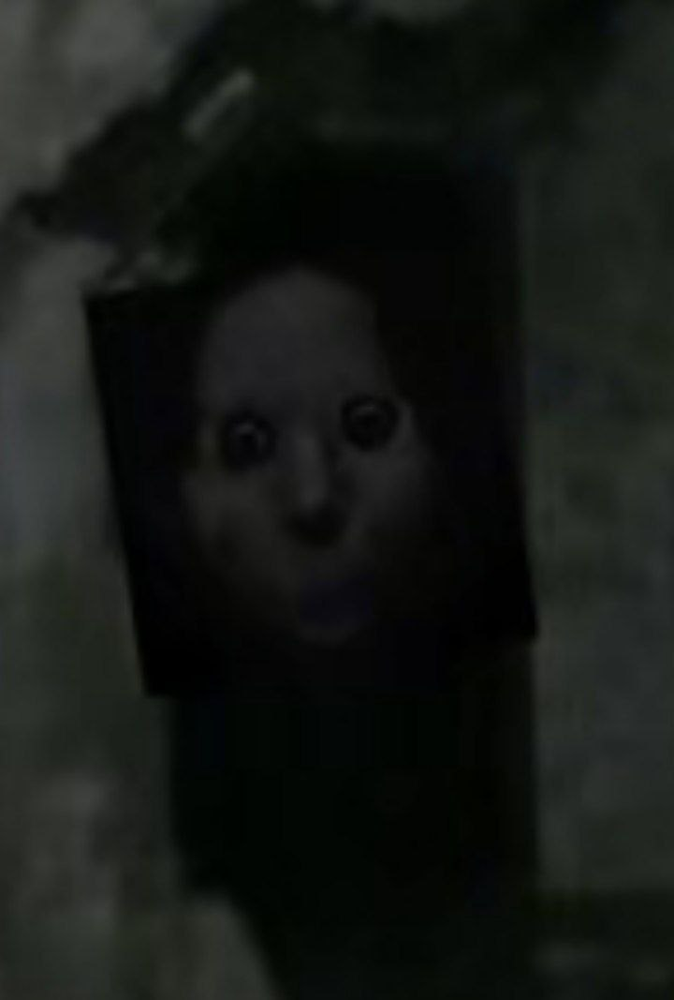
Неизвестно ничего,друны которые видели это исчезли.Те друны опоздали в бункер и это существо вместе со вторым также неизвестным существом видимо растерзали тех друнов.
Объект №42 "Неизвестный монстр"
Обитание:Рядом с бункером(Подвал Мурино)
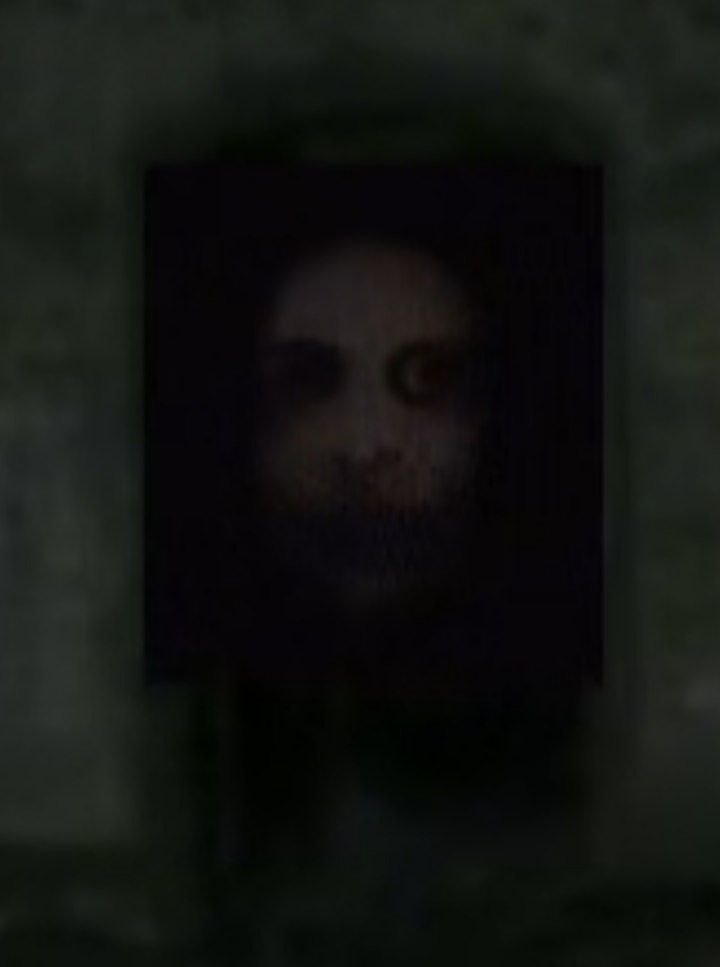
Как и с прошлым объектом ничего неизвестно,но он вместе с прошлым объектом растерзали друнов.
Объект №43 "Ливт"
Обитание:Лифт
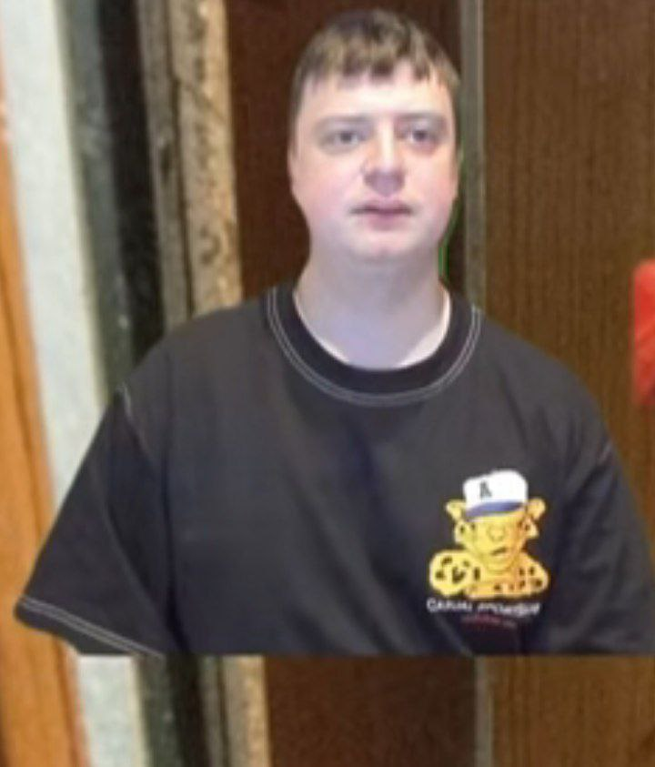
Ливт - это уникальный друн который в одиночку бесконечно катается на муринских лифтах.Проехал больше этажей чем 5 миллионов друннов вместе взятые.
Объект №44 "Дпун"
Обитание:Лифт
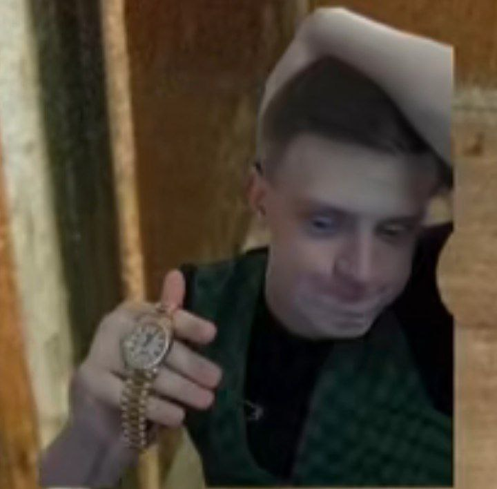
Дпун - это друн который застрял вместе с ливтом в лифте,ему приходится также много кататься на лифте.Он проклинает этот мир и Мурино,хотя кто его не проклинает.
Объект №45 "Вздутость"
Обитание:19638 этаж
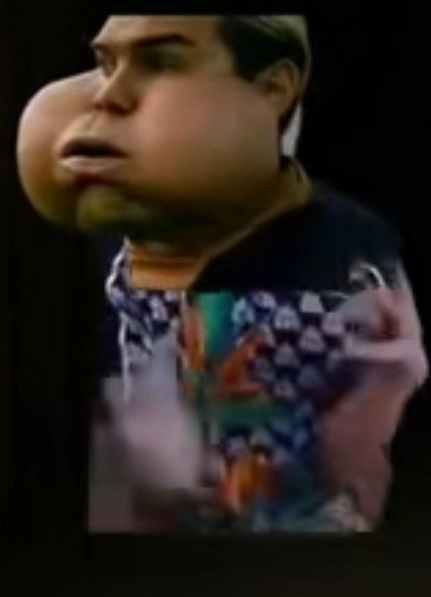
Вдутость это зачарованный пакостным зайцем друн,он скитается по 19638 этажу в надежде найти пакостного зайца,чтобы он снял с него проклятие.
Объект №46 "Шляпа"
Обитание:Всё Мурино
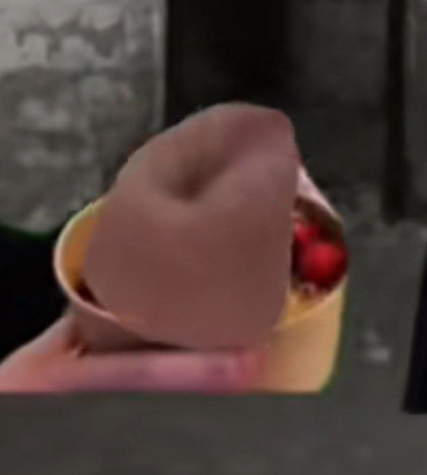
Шляпа это самая популярная еда для друнов и ч,где бы ты не был все питаются шляпой.
Объект №47 "The fog is coming"
Обитание:Всё Мурино
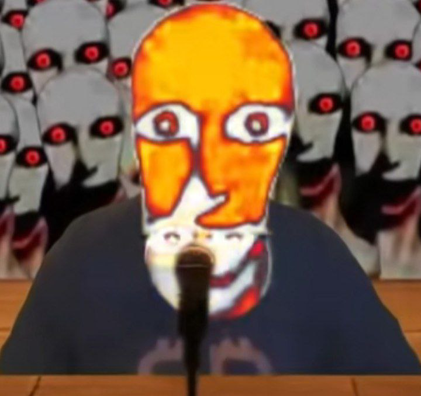
Самый сильный фог не считая фог вейдера,спомобен призывать толпы fog'ов.Его полная сила неизвестна,но он способен перемалывать друнов буквально щелчком пальцев.
Объект №48 "Wish I knew"
Обитание:Подвал Мурино
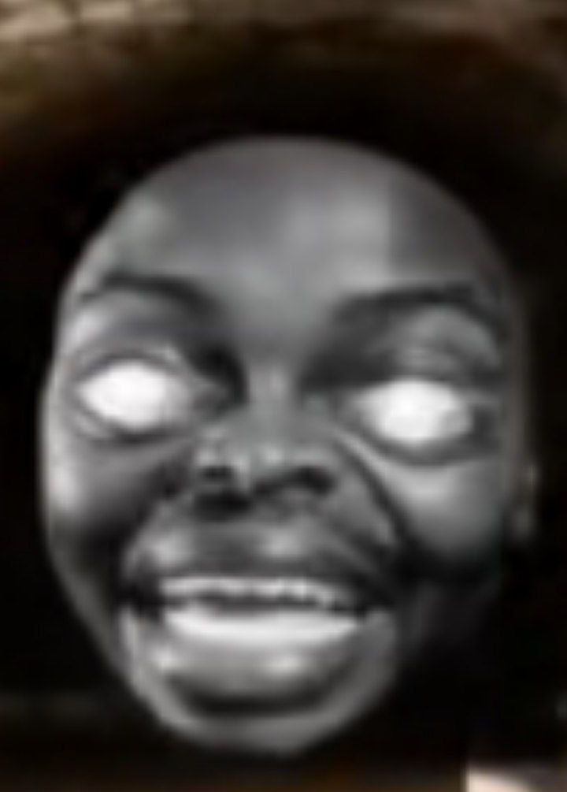
Когда поёт песню безопасный,но после окончания песни он переходит в активную фазу и перемалывает всех друнов на своём пути.Радует только одно,что он находиться на низких этажах Мурино и чтоб его найти нужно постараться.
Объект №49 "Мармеладность"
Обитание:Всё Мурино
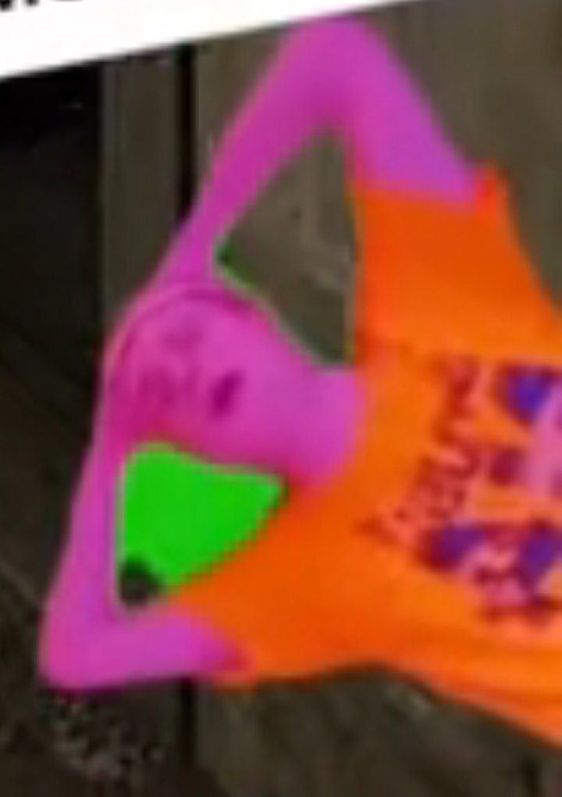
Мармеладность это более редкая,но более значимая вкусность.Из-за основного обитания на высоких этажах 90% мармеладности уничтожено,остались только те которые живут на низких этажах и те кого защищают друны.
Объект №50 "Корэн"
Обитание:Муринская школа
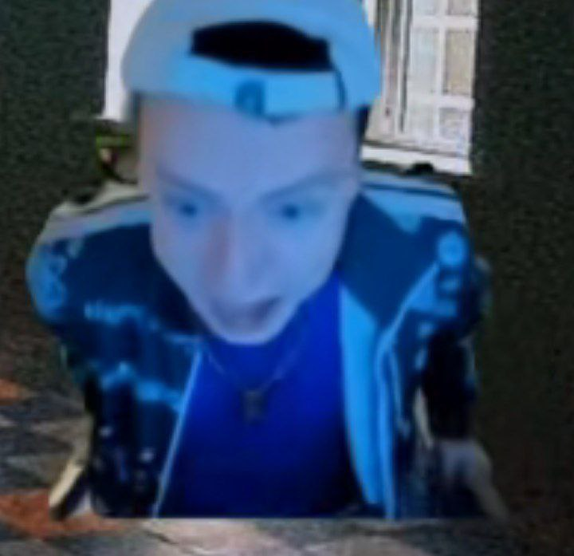
Друн который ненавидит математику,в итоге часто получает от математички.Постояно кричит и убегает от неё.
![[FOGI]](fogi.jpg)
![[BIRD]](bird1.jpg)
![[BIRD2]](bird2.jpg)